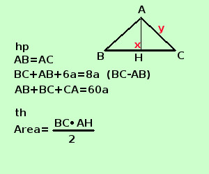

|
sviluppo Risolvere il seguente problema In un triangolo isoscele la somma fra la base ed il lato obliquo aumentata di 6a equivale alla differenza fra la base ed il lato obliquo moltiplicata per 8, mentre il perimetro vale 60a. Calcolare l'area del triangolo in un triangolo isoscele i lati obliqui sono uguali A destra traccio la figura e scrivo l'ipotesi(hp) e la tesi(th)  Per scrivere l'ipotesi scorro il testo e lo riscrivo in linguaggio geometrico: rettangolo scrivo AB=CD e BC=DA "la somma fra la base ed il lato obliquo aumentata di 6a equivale alla differenza fra la base ed il lato obliquo moltiplicata per 8" scrivo AB+BC+6a=8(AB-BC) "il perimetro vale 60a" scrivo AB+BC+ CA=60a La tesi dice che devo trovare l'area, per trovare l'area ho bisogno della base BC e dell'altezza AH Come incognite, mi conviene indicare la base e il lato obliquo, una volta trovati i loro valori, prendando meta' base e considerando il triangolo rettangolo ABH applichero' il teorema di Pitagora per trovare l'altezza AH e quindi calcolare l'area BC=x AC = y "la somma fra la base ed il lato obliquo aumentata di 6a equivale alla differenza fra la base ed il lato obliquo moltiplicata per 8" si scrive x + y + 6a = 8(x - y) x + y + 6a = 8x - 8y 7x - 9y = 6a il perimetro vale 60a" si scrive x + y + y = 60a x + 2y = 60a Faccio il sistema
risolvo con il metodo di sostituzione, ricavo x dalla seconda equazione e lo sostituisco nella prima
quindi AB = 24a BC = 18a ora posso trovare l'altezza AH trovo prima BH BH = BC/2 = 9a applico il teorema di Pitagora al triangolo rettangolo ABH per trovare AH AH2 = AB2 - BH2 = 242 -9a2= 576a2 - 81a2 =495a2 AH = √495 a2 = 3a√55 Area = BC·AH /2 = 18a ·3a√55 /2 = 54a2√55 /2 = 27a2√55 L'area vale 27a2√55 |